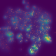

Omni-modal, omni-discipline AI scientist you can run locally across heterogeneous scientific evidence.
Workbenches 64
Local-first desktop workbench wiring agents, notebooks, runs, figures and review into one auditable provenance trail.
When Agent Becomes the Scientist -- Building Closed-Loop System from Hypothesis to Verification
R&D-Agent: An LLM-Agent Framework Towards Autonomous Data Science
Build Your Personalized Research Group: A Multiagent Framework for Continual and Interactive Science Automation
The Virtual Lab of AI agents designs new SARS-CoV-2 nanobodies
Toward Rigorous and Automated Scientific Experimentation with AI Agents
An AI Agent for Therapeutic Reasoning Across a Universe of Tools
Galaxy for accessible, reproducible, and collaborative data analyses: 2026 update
Plans and implements ML engineering work with arXiv integration and code retrieval.
★ 1.6k
Assisting in Writing Wikipedia-like Articles From Scratch with Large Language Models
AI2's science agent family, reproducible and benchmarkable against a rigorous multi-task research suite.
Autonomous deep research over web and local documents with any provider, emitting a cited report.
Long-horizon agent harness that researches, writes code, and produces artifacts.
Fully local, encrypted research agent over arXiv, PubMed, and your own private document collection.
★ 9.1k
Unleashing AI for Accelerated Scientific Research
Hierarchical planner plus specialist agents for deep research and general task execution.
★ 3.5k
Open research assistant combining search, code execution, link resolution and information expansion.
★ 108
LangGraph reference implementation of a deep-research agent, the maintained successor to Open Deep Research.
★ 774
Write Python protocols and execute them on physical Flex and OT-2 liquid-handling robots.
An open-source, hardware-agnostic interface for liquid-handling robots and accessories
Orchestrates beamline and laboratory experiments plus data acquisition, in production at NSLS-II.
a brain for self-driving laboratories
a benchmarking framework for noisy optimization and experiment planning

Self-Driving Lab Demo
Build and run a real low-cost autonomous experimentation rig from dimmable LEDs and a spectrophotometer.
165 validated science skills plus database connectors, installable into Claude Code, Cursor or Codex.
Agent skills for topic exploration, literature survey, experiments, paper writing and integrity audit.
★ 215
AI-Driven Exploration in the Space of Code
An Interactive, Extensible, and Controllable Framework for Building Research Agents
Simulator of Human Research Community
Multi-agent simulation of science-of-science dynamics over real publication data.
★ 143
A Scientific Multimodal Foundation Model
Data Formulator 2: Iterative Creation of Data Visualizations, with AI Transforming Data Along the Way
An Information Extraction Toolkit for Chemistry Literature
Robust Molecular Structure Recognition with Image-to-Graph Generation
Data Interpreter: An LLM Agent For Data Science
Communicative Agents for "Mind" Exploration of Large Language Model Society
Optimized Workforce Learning for General Multi-Agent Assistance in Real-World Task Automation
Communicative Agents for Software Development
Minimal library for code-writing agents, shipping the reference Open Deep Research implementation.
Gives an agent a real single-GPU nanochat training setup and lets it modify code, train, evaluate, keep or discard.
★ 95k
Markdown-only skill pack for autonomous ML research providing cross-model review loops, idea discovery and experiment automation.
★ 16k
Reimagining Research Papers As Interactive and Reliable AI Agents
Automating Code Generation from Scientific Papers in Machine Learning
Semi-automated research assistant spanning ideation, coding, experiments, writing and publication across Claude Code, Codex, Kimi and OpenCode.
★ 5.4k
An AI Scientist Workspace for Vibe Research
Self-evolving research colleague with 285 skills across 28 disciplines and persistent memory over literature and databases.
A New Framework and Benchmark for Advancing AI Research Agents
AI Research Agents for Machine Learning: Search, Exploration, and Generalization in MLE-bench
DeepReview: Improving LLM-based Paper Review with Human-like Deep Thinking Process
Open Source Planning & Control System with Language Agents for Autonomous Scientific Discovery
Scientific Equation Discovery via Programming with Large Language Models
Evolving scientific discovery by unifying data and background knowledge with AI Hilbert
An LLM Agent for Comprehensive Academic Paper Search
Large Language Models Can Automatically Write Surveys
CLI and leaderboard that autonomously optimizes existing research codebases, publishing results only when an internal ledger confirms improvement.
An Agentic Framework for Computational Chemistry Workflows
Automating Molecular Dynamics Workflows with Large Language Models
Large Language Model Made Powerful for High-fidelity Materials Knowledge Retrieval and Distillation
A Flexible LLM-Based Agent System for Materials Science
An LLM-driven Multi-Agent Framework for Automated Single-cell Data Analysis
An LLM Multi-Agent System for Automated Codification of Research Methodologies
Foundational evolving-agent framework reimplementing the SciMaster line including ML-Master, X-Master and Browse-Master.
★ 220
Skills-only operating layer for LabOS, with no engine of its own.
Foundation Models 14
Accurate structure prediction of biomolecular interactions with AlphaFold 3
Simulating 500 million years of evolution with a language model
Genome modeling and design across all domains of life with Evo 2
Towards Accurate and Efficient Binding Affinity Prediction
Decoding the molecular interactions of life
A Foundation Model for the Earth System
Towards Specialized Foundation Models in Astronomy
A Large Language Model for Science
A Pretrained Language Model for Scientific Text
Developing ChemDFM as a large language foundation model for chemistry
Multimodal Natural and Chemical Languages Foundation Model
Diffusion Language Models Are Versatile Protein Learners
Efficient 4B genome foundation model trained on 600 Gbp of metagenomic assemblies for de novo sequence generation.
toward building a foundation model for single-cell multi-omics using generative AI
Datasets 55
A Virtual Environment for Developing and Evaluating Automated Scientific Discovery Agents
Is your Agent Smarter than a 5th Grader?
Benchmark and data for scientific question answering over scholarly literature.
★ 163
Structured scientific hypothesis data released with Sparks of Science.
Large open scientific paper corpus for scholarly NLP and retrieval.
Open scholarly graph and API over works, authors, institutions, and concepts.
Computed materials properties, structures, and discovery infrastructure.
Curated bioactivity database for drug-discovery research.
Open chemical information and compound database.
Protein fitness prediction datasets and evaluation resources.
Cleaned 40M-document S2ORC derivative built specifically for language-model pretraining on scientific full text.
All arXiv Publications Pre-Processed for NLP, Including Structured Full-Text and Citation Network
Official requester-pays S3 bulk access to full-text sources and metadata for the entire arXiv corpus.
A Global Aggregation Service for Open Access Papers
Programmatic access to 200M+ papers with citation contexts, embeddings, author records and paper recommendations.
Bulk full-text XML for millions of openly licensed biomedical articles from PubMed Central.
JSON endpoints for preprint metadata, full-text links and published-version tracking across both preprint servers.
Programmatic access to submissions, reviews, rebuttals and decisions across major machine-learning venues.
Papers with Code has shut down; its domain now redirects to Hugging Face Papers, the de facto successor index.
The Open Reaction Database
Quantum chemistry structures and properties of 134 kilo molecules
Machine learning of accurate energy-conserving molecular force fields
SPICE, A Dataset of Drug-like Molecules and Peptides for Training Machine Learning Potentials
Over one million DFT-computed thermodynamic and structural properties of inorganic compounds with API access.
Automatic-flow repository of millions of computed materials entries exposed through a REST interface.
FAIR repository and analysis platform for raw and processed computational materials data across simulation codes.
NIST-hosted integration of DFT, machine-learning and experimental materials datasets plus public leaderboards.
Open platform for reproducible computational materials science with archived AiiDA provenance graphs.
Reference Raman, X-ray diffraction and chemistry data for well-characterized mineral specimens.
MolSSI public quantum chemistry results archive with a Python client for constructing large QC datasets.
Crystal structure generation with autoregressive large language modeling
Curated protein sequence and functional annotation knowledgebase exposed through a documented REST API.
Experimental three-dimensional biomolecular structures with programmatic search and data web APIs.
Over 200M predicted protein structures with per-residue confidence scores and free bulk download.
Public functional genomics repository of curated expression series, platforms and individual samples.
Uniformly processed functional genomics assays across human and mouse, served through a REST API.
Archive of raw high-throughput sequencing reads across organisms and study types.
EMBL-EBI nucleotide sequence archive mirroring and complementing SRA with its own browser and API.
Standardized single-cell corpus of tens of millions of cells with an API and in-browser exploration.
Proteomics identifications and mass spectrometry raw data repository hosted at EMBL-EBI.
Machine-readable wet-lab protocol repository, directly useful as a grounding source for protocol-planning agents.
Petabytes of LHC collision and simulated data released with virtual machines and runnable analysis examples.
Gravitational-wave strain data and event catalogs from the LIGO, Virgo and KAGRA observatories.
Space Telescope Science Institute multi-mission archive for Hubble, JWST, TESS and Kepler with programmatic access.
Astrophysics literature and citation database with a full API, the standard discovery layer for astronomy.
Sloan Digital Sky Survey imaging and spectra queryable directly through SQL.
Curated exoplanet and host-star parameter tables with TAP query access and bulk downloads.
Federated distribution network for CMIP climate model output and related earth-system simulation data.
Earth-observation data portal spanning NASA distributed active archive centers and their APIs.
a Large-Scale Collection of Diverse Physics Simulations for Machine Learning
CERN-operated DOI-issuing general repository hosting a large share of long-tail scientific artifacts and code snapshots.
Open Science Framework project registry and repository covering preregistrations, materials and data.
Large general-purpose research data repository issuing DOIs, widely used across social and life sciences.
Primary social-science data archive holding curated survey, administrative and longitudinal study collections.
German social-science data archive and infrastructure for survey and computational social science data.
Nothing matches those filters.